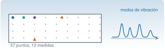
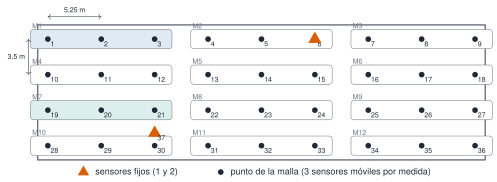
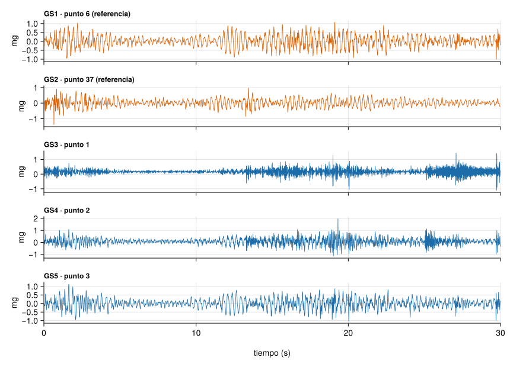
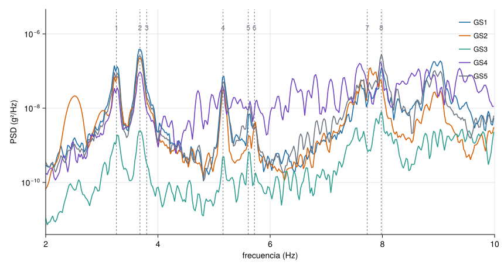
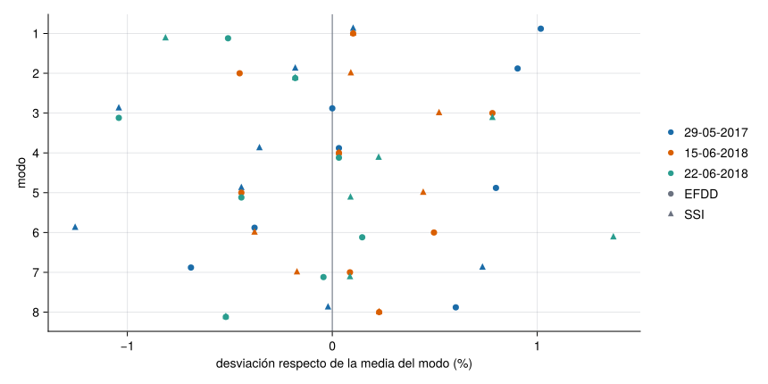
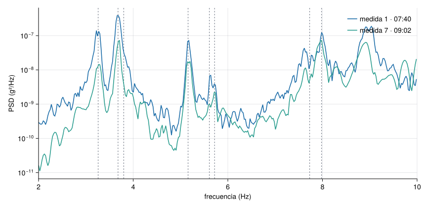

Ver el código
est = Dict(n => leer_torroja(RUTA * "s$(n)_medida01.txt") for n in 1:5)
t, a, fs, codigo, inicio = est[1]
n_muestras = length(t)
duracion = t[end] + 1 / fs
nothingR1 · Catálogo de datos

Cinco acelerómetros triaxiales midieron la vibración ambiental (ambient vibration) del puente de Torroja durante una mañana de junio de 2018. Con solo cinco sensores se cubrió una malla de 37 puntos moviendo tres de ellos entre medidas: la técnica y el diseño del ensayo están descritos en Pachón et al. (2018). Esta página presenta los datos, enseña cómo leerlos y comprueba que el espectro de un solo sensor ya deja ver los modos del puente.
| Estructura | Puente de Eduardo Torroja |
| Fecha | 22-06-2018, de 07:40 a 10:18 (2 h 38 min en total) |
| Sensores | 5 estaciones triaxiales (GS1…GS5), aceleración en g, ejes X, Y y Z |
| Muestreo | 100 Hz |
| Medidas | 12 de 10 min, sobre una malla de 37 puntos |
| Qué hay en el repositorio | Las medidas 1 (07:40–07:50) y 7 (09:02–09:12), cinco sensores cada una |
| Grabaciones completas | Zenodo, doi:10.5281/zenodo.23639137 (Pachón et al. 2026) |
| Licencia | CC BY 4.0: citar Pachón et al. (2018) |
Si usas estos datos, cita el artículo (Pachón et al. 2018) y el depósito de Zenodo (Pachón et al. 2026).
El tablero se discretizó en una malla de 9 columnas (cada 5,25 m) y 4 filas (cada 3,5 m), más un punto auxiliar, el 37. Dos sensores quedaron fijos como referencia: el 1 en el punto 6 y el 2 en el punto 37. Los otros tres se movieron de a tres puntos consecutivos en cada una de las 12 medidas de 10 minutos. Con las referencias fijas se pueden empalmar los resultados de todas las medidas en una sola forma modal.

Durante las medidas 4 a 6 se cortó un carril del puente y durante las 7 a 9, el otro, según las notas de campo; las medidas 1–3 y 10–12 se hicieron sin cortes. Las notas no registran la temperatura media del ensayo.
Cada fichero .txt es una estación y una medida: cuatro líneas de cabecera y después la hora y los tres ejes. leer_torroja (del paquete Resonancia) devuelve el tiempo, la matriz de aceleraciones, la frecuencia de muestreo, la estación y la hora de inicio.
La estación GS1 empieza a las 07:40:00.000, tiene 60000 muestras por eje, muestreadas a 100 Hz: dura 600 s, es decir, 10 min.
puntos = Dict(1 => "punto 6 (referencia)", 2 => "punto 37 (referencia)", 3 => "punto 1", 4 => "punto 2", 5 => "punto 3")
fig = Figure(size=(860, 620))
for (i, n) in enumerate(1:5)
t, a, fs, cod, _ = est[n]
k = t .< 30
ax = Axis(fig[i, 1]; ylabel="mg", xticklabelsvisible=(i == 5),
title="$cod · $(puntos[n])", titlealign=:left, titlesize=12)
lines!(ax, t[k], a[k, 3] .* 1e3; color=i <= 2 ? NARANJA : AZUL, linewidth=0.8)
xlims!(ax, 0, 30)
end
Label(fig[6, 1], "tiempo (s)"; tellwidth=false)
fig
Las amplitudes son de décimas de miligravedad (mg): un ruido muy pequeño que se mide bien porque los sensores son sensibles. El valor eficaz (RMS) de cada estación, en el eje Z, es:
| GS1 | GS2 | GS3 | GS4 | GS5 |
|---|---|---|---|---|
| 0,70 mg | 0,44 mg | 1,17 mg | 1,64 mg | 0,73 mg |
Para calcular espectros cortamos la señal en segmentos de 4096 muestras. Con fs = 100 Hz, ¿qué resolución en frecuencia \(\Delta f = f_s/N\) se obtiene?
\(100/4096 = 0{,}0244\) Hz. Cada segmento dura \(4096/100 = 40{,}96\) s: cuanto más largo el segmento, más fina la resolución, pero menos segmentos se promedian (M3.5, M3.6).
La densidad espectral de potencia (power spectral density, PSD) reparte la energía de la señal por frecuencias. Aquí se estima con el método de Welch: segmentos de 4096 muestras (40,96 s), ventana de Hann y solape del 50 % (M3.6). Los picos de la PSD de un sensor marcan frecuencias donde la estructura vibra más ante una excitación ambiental de banda ancha.
Las líneas discontinuas son las frecuencias de los ocho primeros modos de esta campaña (22-06-2018) que obtuvieron los autores con el método de descomposición en el dominio de la frecuencia mejorada (enhanced frequency domain decomposition, EFDD), una técnica multicanal que usa los cinco sensores a la vez.
efdd_2018_06_22 = [3.26, 3.68, 3.80, 5.16, 5.61, 5.72, 7.73, 7.98]
psd = Dict(n => psd_welch(est[n][2][:, 3], est[n][3]; nseg=4096) for n in 1:5)
en_banda(f) = 2.0 .<= f .<= 10.0
ymax = maximum(maximum(P[en_banda(f)]) for (f, P) in values(psd))
fig = Figure(size=(860, 460))
ax = Axis(fig[1, 1]; xlabel="frecuencia (Hz)", ylabel="PSD (g²/Hz)", yscale=log10)
vlines!(ax, efdd_2018_06_22; color=GRIS, linestyle=:dash, linewidth=1)
for n in 1:5
f, P = psd[n]
lines!(ax, f[en_banda(f)], P[en_banda(f)]; label=est[n][4])
end
text!(ax, efdd_2018_06_22, fill(ymax * 3, 8); text=string.(1:8), align=(:center, :bottom), fontsize=12, color=GRIS)
ylims!(ax, nothing, ymax * 12)
xlims!(ax, 2, 10)
axislegend(ax; position=:rt, nbanks=5, orientation=:horizontal, framevisible=false, labelsize=12)
fig
Las estaciones GS1, GS2, GS4 y GS5 tienen picos sobre las líneas de los modos 1, 2, 4, 7 y 8; GS3 los muestra mucho más débiles, porque cada sensor ve un modo con la amplitud que tiene la forma modal en su punto. La tabla lo cuantifica para GS1: siete de los ocho modos tienen un pico a menos de un 1,5 % de su frecuencia EFDD, y el modo 3 es la excepción (2,8 %), porque está a solo 0,12 Hz del modo 2 y no aparece como un pico propio. Un sensor solo no basta para identificar modos con seguridad (un pico puede ser una componente de la excitación en lugar de un modo), pero sí sirve para comprobar que los datos son coherentes con la identificación multicanal: eso es lo que enseña esta figura.
# frecuencia del pico más cercano a cada modo EFDD en la estación 1
t, a, fs, _, _ = est[1]
f, P = psd_welch(a[:, 3], fs; nseg=4096)
pic = f[buscar_picos(f, P; fmin=2, fmax=10, n=30, separacion=0.1)]
cercano = [pic[argmin(abs.(pic .- f0))] for f0 in efdd_2018_06_22]
desv = abs.(cercano .- efdd_2018_06_22) ./ efdd_2018_06_22 .* 100
tabla = "| Modo | EFDD (Hz) | Pico más cercano de GS1 (Hz) | Diferencia |\n|---|---|---|---|\n" *
join(["| $m | $(coma(efdd_2018_06_22[m])) | $(coma(cercano[m])) | $(coma(desv[m]; d=1)) % |" for m in 1:8], "\n")
println(tabla)| Modo | EFDD (Hz) | Pico más cercano de GS1 (Hz) | Diferencia |
|---|---|---|---|
| 1 | 3,26 | 3,22 | 1,1 % |
| 2 | 3,68 | 3,66 | 0,5 % |
| 3 | 3,80 | 3,91 | 2,8 % |
| 4 | 5,16 | 5,18 | 0,3 % |
| 5 | 5,61 | 5,64 | 0,5 % |
| 6 | 5,72 | 5,64 | 1,4 % |
| 7 | 7,73 | 7,76 | 0,4 % |
| 8 | 7,98 | 7,98 | 0,0 % |
La tabla busca, para cada modo, el pico de la PSD más cercano: con muchos picos disponibles siempre habrá alguno próximo. La comparación solo es significativa porque las diferencias son pequeñas (la resolución es de 0,024 Hz) y porque los picos de las estaciones con buena señal coinciden entre sí.
Si el pico más alto de la PSD de un solo sensor coincide con una frecuencia, ya sabemos que esa frecuencia es un modo de vibración de la estructura.
Falso. Un pico puede ser un modo, pero también una componente de la excitación (por ejemplo, el tráfico) o una interferencia. Para confirmarlo se usan varios sensores a la vez y se comprueba que las amplitudes forman una forma modal coherente (FDD, M7.7).
Los autores identificaron los mismos ocho modos en tres campañas (29-05-2017, 15-06-2018 y 22-06-2018), con dos métodos: EFDD y la identificación estocástica por subespacios (SSI, M7.8). La tabla recoge las seis estimaciones de cada modo.
efdd_ssi = [ # filas: modos 1…8; columnas: 2017 EFDD, 2017 SSI, 15-06-2018 EFDD, 15-06-2018 SSI, 22-06-2018 EFDD, 22-06-2018 SSI
3.31 3.28 3.28 3.28 3.26 3.25
3.72 3.68 3.67 3.69 3.68 3.68
3.84 3.80 3.87 3.86 3.80 3.87
5.16 5.14 5.16 5.16 5.16 5.17
5.68 5.61 5.61 5.66 5.61 5.64
5.69 5.64 5.74 5.69 5.72 5.79
7.68 7.79 7.74 7.72 7.73 7.74
8.07 8.02 8.04 8.04 7.98 7.98]
media_modo = vec(mean(efdd_ssi; dims=2))
rango_rel = vec((maximum(efdd_ssi; dims=2) .- minimum(efdd_ssi; dims=2))) ./ media_modo .* 100
cab = "| Modo | 29-05-2017 EFDD | SSI | 15-06-2018 EFDD | SSI | 22-06-2018 EFDD | SSI | Rango relativo |\n|---|---|---|---|---|---|---|---|\n"
println(cab * join(["| $m | " * join([coma(x) for x in efdd_ssi[m, :]], " | ") * " | $(coma(rango_rel[m]; d=1)) % |" for m in 1:8], "\n"))| Modo | 29-05-2017 EFDD | SSI | 15-06-2018 EFDD | SSI | 22-06-2018 EFDD | SSI | Rango relativo |
|---|---|---|---|---|---|---|---|
| 1 | 3,31 | 3,28 | 3,28 | 3,28 | 3,26 | 3,25 | 1,8 % |
| 2 | 3,72 | 3,68 | 3,67 | 3,69 | 3,68 | 3,68 | 1,4 % |
| 3 | 3,84 | 3,80 | 3,87 | 3,86 | 3,80 | 3,87 | 1,8 % |
| 4 | 5,16 | 5,14 | 5,16 | 5,16 | 5,16 | 5,17 | 0,6 % |
| 5 | 5,68 | 5,61 | 5,61 | 5,66 | 5,61 | 5,64 | 1,2 % |
| 6 | 5,69 | 5,64 | 5,74 | 5,69 | 5,72 | 5,79 | 2,6 % |
| 7 | 7,68 | 7,79 | 7,74 | 7,72 | 7,73 | 7,74 | 1,4 % |
| 8 | 8,07 | 8,02 | 8,04 | 8,04 | 7,98 | 7,98 | 1,1 % |
desv_rel = (efdd_ssi .- media_modo) ./ media_modo .* 100
campana = repeat(1:3, inner=2)
metodo = repeat(1:2, 3)
fig = Figure(size=(860, 430))
ax = Axis(fig[1, 1]; xlabel="desviación respecto de la media del modo (%)", ylabel="modo",
yticks=1:8, yreversed=true)
vlines!(ax, 0; color=GRIS, linewidth=1)
colores = [AZUL, NARANJA, VERDE]
for m in 1:8, j in 1:6
scatter!(ax, desv_rel[m, j], m + (campana[j] - 2) * 0.12;
color=colores[campana[j]], marker=metodo[j] == 1 ? :circle : :utriangle, markersize=10)
end
elementos = [MarkerElement(color=colores[1], marker=:circle), MarkerElement(color=colores[2], marker=:circle), MarkerElement(color=colores[3], marker=:circle),
MarkerElement(color=GRIS, marker=:circle), MarkerElement(color=GRIS, marker=:utriangle)]
Legend(fig[1, 2], elementos, ["29-05-2017", "15-06-2018", "22-06-2018", "EFDD", "SSI"]; framevisible=false)
fig
Entre campañas y métodos, la frecuencia de un mismo modo varía como mucho un 2,6 % (modo 6). Esa es la variabilidad que M0.3 pide medir antes de fijar un umbral de alarma: una pérdida de rigidez del 5 % bajaría las frecuencias un 2,5 % aproximadamente (\(f\propto\sqrt{k}\)), un cambio del mismo orden que esta dispersión: con estos datos, una pérdida de rigidez así sería difícil de distinguir de la variabilidad normal y habría que explicarla con más medidas (temperatura, tráfico) antes de dar la alarma.
Calcula el rango relativo (máximo − mínimo, dividido entre la media) de las seis estimaciones del modo 3 de la Tabla 2.
Valores 3,84; 3,80; 3,87; 3,86; 3,80; 3,87. Máximo 3,87, mínimo 3,80, media 3,84. Rango \(= 0{,}07/3{,}84 = 1{,}8\,\%\).
Las dos medidas del repositorio se hicieron con 80 minutos de diferencia. La estación 1 estuvo en el mismo punto (el 6) en ambas.
fig = Figure(size=(860, 420))
ax = Axis(fig[1, 1]; xlabel="frecuencia (Hz)", ylabel="PSD (g²/Hz)", yscale=log10)
vlines!(ax, efdd_2018_06_22; color=GRIS, linestyle=:dash, linewidth=1)
rms_m = Float64[]
for (m, etiqueta, color) in (("01", "medida 1 · 07:40", AZUL), ("07", "medida 7 · 09:02", VERDE))
t, a, fs, _, _ = leer_torroja(RUTA * "s1_medida$m.txt")
push!(rms_m, std(a[:, 3]) * 1e3)
f, P = psd_welch(a[:, 3], fs; nseg=4096)
k = 2.0 .<= f .<= 10.0
lines!(ax, f[k], P[k]; label=etiqueta, color=color)
end
xlims!(ax, 2, 10)
axislegend(ax; position=:rt, framevisible=false)
fig
Los picos están en las mismas frecuencias, pero la medida 1 tiene un RMS de 0,70 mg frente a 0,38 mg de la medida 7: 1,9 veces más. Los datos no dicen por qué: no hay registro del tráfico ni de la temperatura durante el ensayo.
Como la medida 1 tiene más vibración que la 7, podemos afirmar que se debe al tráfico.
Falso. Hay una diferencia de amplitud, pero ninguna variable medida que la explique: el RMS cambia con la excitación (tráfico, viento, obras) y los datos no registran cuál actuó. Atribuirla al tráfico es una hipótesis razonable, no un resultado. En SHM esto se resuelve midiendo también las variables ambientales y operacionales (M0.3, M12.5).
Cada animación muestra una forma modal identificada, con su frecuencia, amortiguamiento y «complejidad» (una medida de cuánto se aleja el modo de uno real normal). Se han convertido a MP4 desde las originales del ensayo.
| Modo | Frecuencia (Hz) | Amortiguamiento (%) |
|---|---|---|
| 1 | 3,26 | 1,11 |
| 2 | 3,677 | 0,919 |
| 3 | 3,801 | 0,661 |
| 4 | 5,162 | 0,567 |
| 5 | 5,615 | 0 |
| 6 | 5,721 | 0,227 |
| 7 | 7,728 | 0,887 |
| 8 | 7,939 | 0,454 |
Una estructura real siempre disipa energía. Un valor de 0 % indica que el método no pudo estimar el amortiguamiento de ese modo, no que no exista. El amortiguamiento se estima con mucha más incertidumbre que la frecuencia, y por eso se usa menos como indicador de daño.
leer_torroja y psd_welch están en el paquete Resonancia (referencia).Son las mismas que aparecen en el margen, junto al texto. La lista completa del curso, con el estado de verificación de cada ficha, está en recursos/bibliografia.bib del repositorio.
Pachón, Pablo, Rafael Castro, Enrique García-Macías, Víctor Compán, y Esther Puertas. 2018. «E. Torroja’s bridge: Tailored experimental setup for SHM of a historical bridge with a reduced number of sensors». Engineering Structures 162: 11-21. https://doi.org/10.1016/j.engstruct.2018.02.035.
Pachón, Pablo, Rafael Castro-Triguero, Enrique García-Macías, Víctor Compán, y Esther Puertas. 2026. «Ambient vibration records of E. Torroja’s bridge (22 June 2018)». Zenodo. https://doi.org/10.5281/zenodo.23639137.